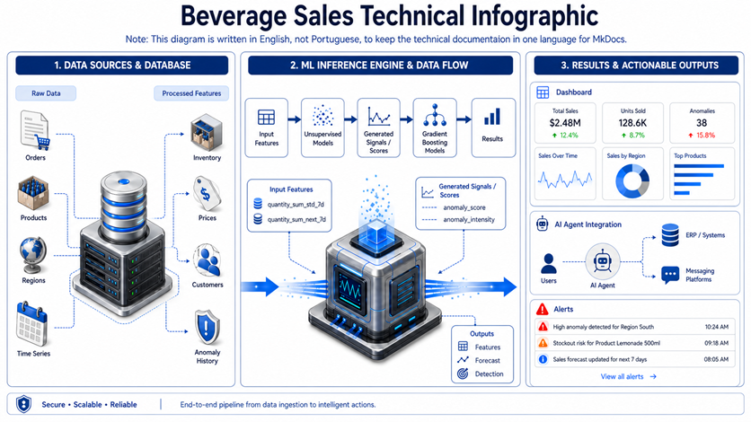
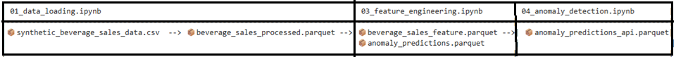
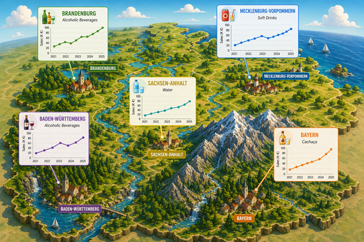
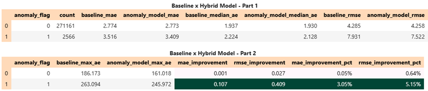
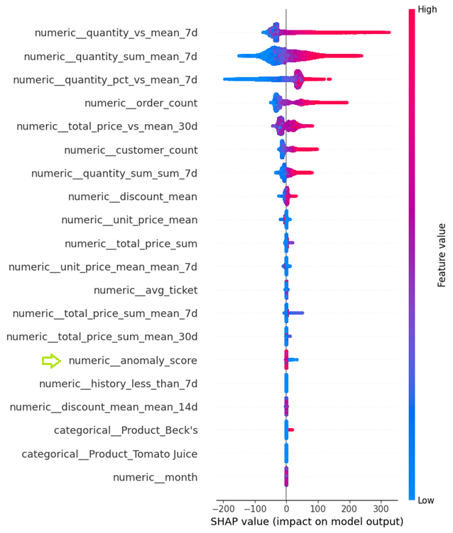
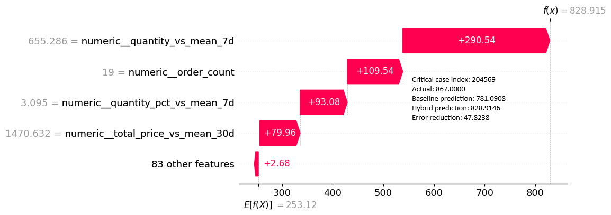

Beverage Sales Analytics and Hybrid ML Pipeline
📝Language: The documentation maintain almost all documentation in English to guarantee technical consistency and avoid redundant work.
A documentação é mantida em inglês para garantir consistência técnica e evitar retrabalho na documentação.

Dataset
🌐 Pesquisar o artigo/dataset do Kaggle DataSet
Overview
This project proposes a hybrid forecasting pipeline for beverage sales that combines:
- supervised demand forecasting with LightGBM
- unsupervised anomaly detection with Isolation Forest
- explainability analysis with SHAP
- time-based feature engineering using sliding windows, rolling statistics, and business-oriented ratios
The central idea is simple: a forecasting model can benefit from signals that tell it when the sales context looks unusual.
Instead of using only traditional lag and rolling features, the project adds an anomaly layer so the forecasting model can better react to rare, unstable, or unexpected demand behavior.
Business Motivation
Sales data rarely behaves in a perfectly stable way. In real scenarios, demand may spike or drop because of:
- local demand changes
- promotions or discounts
- product/region-specific behavior
- changes in customer concentration
- unusual business events
A model trained only on historical averages may perform well in normal periods, but struggle when the pattern becomes less stable.
Because of that, this project investigates whether anomaly-aware forecasting can improve performance compared to a baseline forecasting model.
Main Objective
Build and evaluate a forecasting workflow capable of predicting aggregated beverage sales while answering the following question:
Does a hybrid model that receives anomaly signals from Isolation Forest perform better than a standard baseline model?
⚙️The project follows this logic:
raw data -> data quality -> feature engineering -> anomaly detection -> baseline model -> hybrid model -> performance benchmarking
⚙️Execution order
The project was organized as a notebook pipeline. The recommended execution order is:
📝01_data_loading.ipynb -> 📝02_data_quality.ipynb -> 📝03_feature_engineering.ipynb -> 📝04_anomaly_detection.ipynb ->
📝05_BaseLine.ipynb -> 📝06_HybridModel.ipynb -> 📝07_Interpretability_SHAP_Analysis.ipynb -> 📝08_performance_benchmarking.ipynb
Suggested execution order:
01_data_loading.ipynb02_data_quality.ipynb03_feature_engineering.ipynb04_anomaly_detection.ipynb05_BaseLine.ipynb06_HybridModel.ipynb07_Interpretability_SHAP_Analysis.ipynb08_performance_benchmarking.ipynb
Export parquet to API project
- To finalize the model, a compressed Parquet file is generated to be used in the API project. It is only required in the Beverage-Sales API project because the API relies on historical data to return responses, due to the use of a Sliding Window. Location (data/exports)
- 📦
anomaly_predictions_api.parquet

Project Storytelling

The project was designed as a structured pipeline rather than an isolated notebook experiment.
The flow starts with raw transactional sales data in CSV format.
From there, the data is validated, transformed, enriched with temporal and aggregated features, and finally used in two modeling strategies:
-
Baseline model
A LightGBM regressor trained only on business and time-series engineered features. -
Hybrid model
A LightGBM regressor trained on the same features plus anomaly signals generated by Isolation Forest.
After training both models, the project compares their behavior globally and, more importantly, in periods marked as anomalous.
This is a relevant distinction because anomaly-aware modeling is expected to help the most when the data deviates from normal behavior, not necessarily in every stable scenario.
Finally, the project uses SHAP to make the hybrid model more interpretable and to verify whether the anomaly features actually contribute to model decisions.
End-to-End Workflow
The project follows this execution order:
01_data_loading.ipynb02_data_quality.ipynb03_feature_engineering.ipynb04_anomaly_detection.ipynb05_BaseLine.ipynb06_HybridModel.ipynb07_Interpretability_SHAP_Analysis.ipynb08_performance_benchmarking.ipynb
Notebook Roles
| Notebook | Role in the pipeline |
|---|---|
01_data_loading.ipynb |
Loads raw CSV data and saves it in Parquet format |
02_data_quality.ipynb |
Applies validation rules and checks whether the processed data is reliable |
03_feature_engineering.ipynb |
Builds temporal, rolling, ratio, and aggregated features |
04_anomaly_detection.ipynb |
Trains Isolation Forest and generates anomaly_score and anomaly_flag |
05_BaseLine.ipynb |
Trains the baseline LightGBM model |
06_HybridModel.ipynb |
Trains the hybrid LightGBM model with anomaly signals |
07_Interpretability_SHAP_Analysis.ipynb |
Explains the hybrid model using SHAP |
08_performance_benchmarking.ipynb |
Compares baseline vs hybrid performance |
Data Loading and Persistence
The first notebook converts the raw CSV dataset into Parquet, which is a practical engineering decision because it improves:
- read performance
- pipeline consistency
- reproducibility across steps
- easier reuse in downstream notebooks and APIs
This step may look simple, but it is important because it turns the project into a more production-oriented workflow rather than a one-time notebook exploration.
Data Quality Validation
Before building features or models, the project validates the processed dataset.
Data quality rules checked
The quality notebook evaluated 10 validation rules, including:
- missing quantity
- negative quantity
- missing discount
- negative discount
- discount above one
- invalid customer type
- B2C discount rule violation
- invalid order date
- exact duplicate rows
- total price consistency
Result
The quality report indicated:
- Rules evaluated: 10
- Rules with issues found: 0
- Total issue count: 0
- High-severity issues: none detected
Interpretation
This is an important foundation for the rest of the project.
A forecasting model can only be trusted if the input data is trustworthy.
By explicitly validating business rules before feature generation, the project reduces the risk of learning from invalid records or from silent inconsistencies in the source data.
Feature Engineering
This stage is one of the strongest parts of the project.
Instead of treating the problem as a generic tabular regression task, the notebook introduces time-aware and business-aware features that help the model understand demand behavior more realistically.
Main engineered features
The project includes features such as:
quantity_sumtotal_price_sumunit_price_meandiscount_meanorder_countcustomer_countavg_ticketday_of_weekmonthyearis_weekend
It also creates rolling and contextual features such as:
quantity_sum_mean_7dquantity_sum_std_7dquantity_sum_sum_7dtotal_price_sum_mean_7dtotal_price_sum_std_7dtotal_price_sum_mean_30dunit_price_mean_mean_7ddiscount_mean_mean_14dquantity_vs_mean_7dtotal_price_vs_mean_30dquantity_pct_vs_mean_7dhistory_less_than_7dhistory_less_than_30d
Why this matters
These features do more than summarize history.
They give the model a notion of:
- short-term behavior
- dispersion and stability
- recent demand acceleration or slowdown
- relationship between current demand and recent local average
- maturity of the historical window
This is exactly the kind of feature engineering that allows tree-based models such as LightGBM to work well in time series contexts.
Sliding Window Logic
A key technical idea in this project is the use of sliding windows.
Instead of feeding the model only the current record, the project summarizes recent history into windows such as 7, 14, and 30 days.
This makes it possible to convert a temporal problem into a feature-based supervised learning problem without ignoring the order of events.
Practical interpretation
The sliding window allows the model to answer questions like:
- What was the average demand in the last 7 days?
- How unstable was demand recently?
- Is the current value above or below the recent normal level?
- Is there enough past history to trust the statistics?
Why sliding window is important here
Without this step, LightGBM would receive mostly static columns and would not understand temporal context well.
With sliding windows, the model gains a compact view of short-term dynamics and can better capture local demand behavior.
Technical strength
This is one of the reasons the project is stronger than a simple “apply LightGBM to a dataset” exercise.
The model is not relying on the algorithm alone.
It is relying on a well-designed representation of time.
Exploratory Analysis and Outlier Inspection
The feature engineering notebook also includes exploratory visual analysis such as:
- distribution analysis
- boxplots
- violin plots
- IQR-based outlier inspection
These analyses are useful for two reasons:
- They show that the author investigated the data before modeling.
- They help justify why anomaly detection is meaningful in this dataset.
The visual exploration suggests that sales quantity is not perfectly stable and that the data contains asymmetric behavior and unusually high observations.
This provides a natural motivation for testing an anomaly-aware architecture.
1. Note
The distribution shown in your beverage sales data—characterized by a dense base and a thin "neck" of outliers—is a significant challenge for additive models like Prophet.
- Seasonality Distortion: Prophet identifies repeating patterns based on time. If a sales spike of 100 units occurs in December, the model may incorrectly label this as a permanent "December effect." This leads to over-forecasting in future years even if the spike was a one-time anomaly.
- Trend Instability: Because Prophet is a regression-based model, it is highly sensitive to extreme values. A single "neck" outlier can pull the entire baseline trend upward, making the model lose its accuracy for normal sales days.
- Uncertainty Inflation: The model calculates uncertainty intervals based on historical variance. When it sees values ranging from 0 to 100 while the median is only 10–15, the forecast intervals become so wide they lose their practical value for inventory planning.
2. Comparative Analysis: Prophet vs. Hybrid Model
The hybrid approach using Isolation Forest and LightGBM overcomes these limitations by focusing on technical transparency and Explainable AI (XAI).
| Feature | Prophet (Standard) | Your Hybrid Model (XAI-Driven) |
|---|---|---|
| Outlier Handling | Attempts to fit the curve to outliers, distorting the long-term trend. | Uses an anomaly_flag to isolate and identify unusual events. |
| Forecasting Logic | Relies strictly on time-based patterns like days or months. | Uses operational drivers such as order_count and quantity_vs_mean_7d. |
| Interpretability | Difficult to explain why a specific peak or dip occurred. | Uses SHAP waterfall plots to show exactly which features drove the prediction. |
| Accuracy | Often overestimates demand after seeing a historical spike. | Reduces error (MAE/RMSE) by recognizing and adjusting for unusual activity. |
Anomaly Detection with Isolation Forest
The anomaly detection step trains an Isolation Forest model to detect unusual sales behavior.
Important methodological decision
The notebook explicitly states that, to avoid leakage, the anomaly model is trained only on:
- 2021
- 2022
The year 2023 is left for testing.
This is a very good design choice because it preserves temporal realism.
Best parameters found
The notebook reports the following best parameters for Isolation Forest:
contamination = 0.01max_features = 1.0max_samples = 512n_estimators = 100
Generated anomaly signals
The anomaly detection stage produces at least two important features:
anomaly_scoreanomaly_flag
These are later injected into the hybrid LightGBM model.
Why this is useful
Isolation Forest is not being used here as the final predictive model.
It is being used as a context detector.
That is the key architectural idea:
- the unsupervised model identifies unusual contexts
- the supervised model uses that information to improve demand prediction
This is a strong design choice because it combines two different modeling perspectives in a complementary way.
Baseline Forecasting Model
The baseline notebook trains a LightGBM regressor using only the engineered business and temporal features.
Baseline features used
The baseline model uses:
- business aggregates
- calendar features
- rolling-window statistics
- ratio/context features
- categorical identifiers such as
ProductandRegion
Reported baseline metrics
The notebook reports the following evaluation metrics:
- MAE:
2.7275 - RMSE:
4.1588 - R²:
0.999305
Interpretation
These values indicate that the baseline model is already very strong.
- A low MAE suggests that the average prediction error is small.
- A low RMSE indicates that large errors are relatively controlled.
- A very high R² suggests that the model explains almost all observed variance in the target.
That said, in forecasting problems, a strong baseline is not a reason to stop.
It is the correct point of comparison for more advanced strategies.
Hybrid Forecasting Model
The hybrid notebook trains another LightGBM regressor, but now with two additional inputs:
anomaly_scoreanomaly_flag
This means the model receives both:
- the normal structured sales context
- a signal about whether the current context looks unusual
Reported hybrid notebook metrics
The training notebook reports:
- MAE:
2.7463 - RMSE:
4.1904 - R²:
0.999295
Important note about interpretation
These metrics from the hybrid training notebook should be read with caution when compared directly to the final benchmark section, because the project later performs a more detailed comparison split by anomaly condition and train/test context.
The most important conclusion of the project does not come from reading the hybrid notebook metrics in isolation.
It comes from the dedicated benchmarking step, where the two models are compared in a more structured way.
Performance Benchmarking
This is the notebook that gives the most meaningful final answer.
Instead of only comparing one global metric, the project evaluates both models by anomaly group.
This is important because the hybrid approach is expected to help especially when the sales behavior is unusual.
Train-Side Comparison by Anomaly Group
The benchmarking output for the training-side comparison shows:
| anomaly_flag | count | baseline_mae | hybrid_mae | baseline_rmse | hybrid_rmse | mae_improvement_pct | rmse_improvement_pct |
|---|---|---|---|---|---|---|---|
| 0 | 543470 | 2.6905 | 2.6947 | 3.9699 | 3.9670 | -0.1557% | 0.0736% |
| 1 | 5490 | 6.3946 | 6.2201 | 13.0114 | 12.3144 | 2.7286% | 5.3573% |
Interpretation
This result is very revealing:
- In normal cases (
anomaly_flag = 0), the hybrid model behaves almost the same as the baseline. - In anomalous cases (
anomaly_flag = 1), the hybrid model shows a clear improvement.
This is exactly what one would hope to see.
The anomaly features do not radically distort the model in normal periods.
Instead, they seem to become more useful when the context is unstable.
Test-Side Comparison by Anomaly Group
The test-side comparison shows:

Interpretation
Analysis of the results by anomaly_flag
This table compares the baseline model and the hybrid model in two different groups:
anomaly_flag = 0: normal periods anomaly_flag = 1: anomalous periods
The main idea is to check whether the hybrid model performs better, especially when the data shows unusual behavior.
1. Normal periods (anomaly_flag = 0)
This group contains 271,161 observations, so it represents almost all of the dataset. In this scenario, the hybrid model shows a small improvement over the baseline model.
MAE decreases from 2.774 to 2.773 Median AE decreases from 1.937 to 1.930 RMSE decreases from 4.285 to 4.258 Max AE decreases from 186.173 to 161.018
The percentage improvement is small:
MAE improvement: about 0.05% RMSE improvement: about 0.64%
This means that for normal periods, both models behave very similarly. The hybrid model is slightly better, but the gain is modest. This is expected, because in stable periods the baseline model already performs well.
2. Anomalous periods (anomaly_flag = 1)
This group contains only 2,566 observations, so it is much smaller, but also more important from a business point of view because these are the difficult cases.
Here, the hybrid model performs more clearly better than the baseline model:
MAE decreases from 3.516 to 3.409 Median AE decreases from 2.224 to 2.128 RMSE decreases from 7.931 to 7.522 Max AE decreases from 263.094 to 245.972
The improvements are much more relevant:
MAE improvement: about 3.05% RMSE improvement: about 5.15%
This is an important result. It suggests that the hybrid approach helps more when the pattern is unusual or harder to predict. In other words, the anomaly-related information seems to add useful signal exactly where the forecasting problem is more complex.
3. Comparison between normal and anomalous periods
The table also shows that anomalous periods are naturally more difficult for both models.
For example:
In normal periods, baseline RMSE is 4.285 In anomalous periods, baseline RMSE increases to 7.931
The same happens with MAE and Max AE. This indicates that anomalous periods contain more uncertainty, more volatility, or patterns that are less easy to learn.
Because of that, the fact that the hybrid model improves more strongly in the anomalous group is meaningful. It is not only a statistical improvement, but also a sign that the anomaly detection component may be helping the forecasting model focus on difficult situations.
4. Final interpretation
Overall, the results suggest the following:
The hybrid model does not harm performance in normal periods It brings small but positive gains in stable situations It brings more relevant gains in anomalous periods It also reduces the maximum error, which is useful because very large mistakes can be costly in real scenarios
Interpretation
Globally, the gains are modest, which is expected because most records are not anomalous.
However, the project becomes much more convincing when we look at where the gains happen:
- the hybrid model is not mainly improving easy cases
- it is improving the more difficult and less stable segments
That is a strong argument in favor of the hybrid design.
Why the Hybrid Model Matters
A fair question is:
If the overall gain is not huge, why is the hybrid model important?
Because in many real business problems, the main value does not come from making already-stable cases slightly better.
It comes from reducing error when the behavior becomes abnormal.
This project shows exactly that pattern:
- stable periods: nearly equivalent performance
- unstable periods: better control of error with anomaly-aware modeling
That makes the hybrid model strategically valuable.
SHAP Interpretability Analysis
The project uses SHAP to understand the hybrid model.
This is an important step because once anomaly features are introduced, it becomes necessary to explain whether they are actually influencing the model and how they interact with the other predictors.

Most relevant features reported
The SHAP analysis highlights features such as:
numeric__quantity_vs_mean_7dnumeric__quantity_sum_mean_7dnumeric__quantity_pct_vs_mean_7dnumeric__order_countnumeric__total_price_vs_mean_30dnumeric__customer_count
Interpretation
This feature ranking is coherent with the business logic of the project.
The model is mostly driven by:
- deviation from recent behavior
- recent local demand level
- order intensity
- customer concentration
- context relative to short and medium historical windows
This is a very good sign, because it shows the model is learning meaningful demand structure rather than relying on arbitrary noise.
Role of anomaly signals in SHAP

Why the Model Predicted High Demand The waterfall plot explains how our hybrid model adjusted its forecast for a specific high-impact event. Starting from a baseline of 253.12, the model factored in several key signals to reach a final prediction of 828.91.
While the actual value hit 867.00, the hybrid model was much more accurate than the baseline (which predicted 781.09), cutting the prediction error by 47.82 units.
Ultimately, this case proves that the hybrid approach excels at catching "unusual" behavior that standard models might miss, bringing us much closer to the truth during critical sales events.
Interpretation of the Main Metrics
MAE — Mean Absolute Error
MAE measures the average absolute difference between prediction and actual value.
In practical terms:
- it tells how far the forecast is from reality on average
- it is easy to interpret
- it is less sensitive to extreme errors than RMSE
For this project, MAE is useful to understand the typical forecast error.
RMSE — Root Mean Squared Error
RMSE also measures prediction error, but penalizes large mistakes more strongly.
In practical terms:
- it gives more weight to severe errors
- it is very useful when large misses are especially undesirable
- it helps detect whether the model is struggling with difficult cases
In this project, RMSE is especially important because the hybrid model improves more strongly in anomalous periods, where big errors are more likely to happen.
R² — Coefficient of Determination
R² indicates how much of the target variance is explained by the model.
A very high R² is expected here because the project uses a rich set of engineered features and a strong tree-based model.
Still, R² alone is not enough to compare models in this context.
MAE and RMSE are more informative for understanding forecast quality.
Methodological Strengths
This project has several strong points:
1. Clear pipeline structure
The work is not a loose notebook exploration.
It follows a reproducible sequence from raw data to evaluation.
2. Data quality before modeling
The project validates rules before feature engineering and training.
3. Time-aware design
The train/test split respects time:
- train: 2021–2022
- test: 2023
4. Leakage awareness
The anomaly model is also trained only on the historical period.
5. Strong feature engineering
Sliding windows, ratios, rolling statistics, and context-aware signals are all well aligned with forecasting logic.
6. Hybrid architecture
The project combines unsupervised and supervised learning in a meaningful way.
7. Explainability
The use of SHAP makes the project more robust and easier to defend technically.
8. Segment-aware benchmarking
Comparing the models by anomaly group is much more informative than comparing only one global metric.
Final Conclusion
This project shows that:
- a strong baseline forecasting model can already perform very well
- adding anomaly awareness does not need to improve every case equally
- the real value of the hybrid model appears in the more difficult, unstable, and unusual periods
The final benchmark indicates that the Isolation Forest + LightGBM combination is a valid and technically defensible approach.
The most important conclusion is not only:
“Did the hybrid model improve?”
But rather:
“Where did it improve, and why does that matter?”
In this project, the answer is clear:
- the hybrid model is especially useful in anomalous contexts
- it reduces error more meaningfully where the problem is harder
- SHAP confirms that the model relies on coherent temporal and contextual features
- the overall architecture is consistent with a real ML engineering workflow